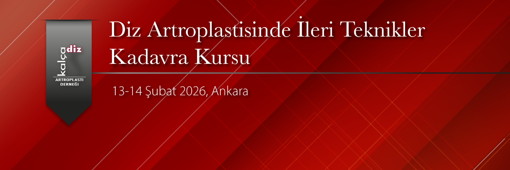

Değerli Meslektaşlarımız,
Kalça ve Diz Artroplasti Derneği olarak 13-14 Şubat 2026 tarihlerinde Ankara'da ‘’Diz Artroplastisinde İleri Teknikler: Kadavra Kursu" düzenlenecektir.
Kursta iki gün boyunca konusunda uzman hocalar eşliğinde zor primer diz artroplatisi, komplikasyonlar, genişletilmiş açılımlar ve revizyon diz artroplastisi konularında teorik eğitimler, olgu tartışmaları ve kadavra üzerinde eğitimler yapılacaktır.
Temel ve İleri Artroplasti Kurslarını tamamlamış toplam 30 katılımcı ile yapılması planlanmış olan kursumuzun katılım ücreti 40.000 TL'dir.
Artroplasti ile ilgilenen ve kendini bu alanda geliştirmek isteyen tüm meslektaşlarımızı kursumuza davet etmekten büyük mutluluk duyarız.
Prof. Dr. İbrahim Tuncay
KADAD Başkanı
Doç. Dr. Hakan Kocaoğlu
Kurs Başkanı

